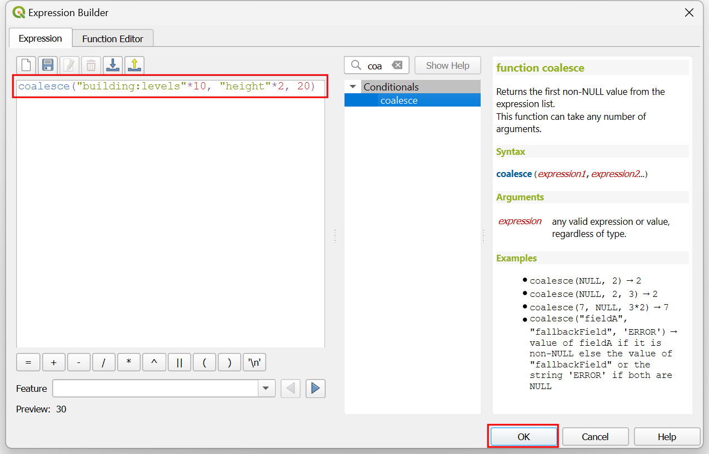

Ujaval Gandhi
Ujaval GandhiKreiranje izometrijskih zgrada (QGIS3)¶
Doprinos: Stiven Kim
OpenStreetMap (OSM) je globalni skup podataka o putevima, granicama, zgradama i još mnogo toga prikupljen putem kraudsorsinga. Sadrži rastuću kolekciju otisaka zgrada širom sveta, a mnoge od njih takođe imaju informacije o visini. Iako je tačnost podataka o visini zgrada poznato teška za validaciju za analizu, možemo koristiti QGIS izraze da bismo kreirali zabavno umetničko izometrijsko prikazivanje iz ovih podataka.
Pregled zadatka¶
Preuzećemo podatke o otiscima zgrada iz OSM-a za centar Toronta i kreirati izometrijsku mapu visina zgrada.

Dobijte podatke¶
Preuzimaćemo podatke sa OpenStreetMap(OSM) koristeći QuickOSM dodatak. Pogledajte Pretraživanje i preuzimanje podataka OpenStreetMap-a (QGIS3) za uvod u QuickOSM dodatak. Kada instalirate dodatak, možete nastaviti sa uputstvima ispod da biste dobili podatke za vaš region.
Белешка
Ovaj tutorijal je posebno dizajniran za rad sa OSM podacima izdvojenim iz QuickOSM dodatka. Izraz za visinu ne radi sa OSM datotekama planeta ili izdvojenim podacima sa other_tags. U tim slučajevima, prvo morate izdvojiti nivoe i visine zgrada pre nego što ih upotrebite.
Otvorite QGIS. Prvo ćemo učitati osnovnu mapu. Iz panela Browser, pomerite se nadole i pronađite sloj pločica . Prevucite ga i otpustite na glavno platno. Zumirajte na region koji vas zanima. Uverite se da je region u potpunosti pokriven obimom mape.

Pokrenite QuickOSM dodatak iz .

U kartici Brzi upit, unesite
buildingkao Ključ. Promenite Unutar u Opseg platna. Ovo će preuzeti sve zgrade u trenutnom opsegu platna. Proširite odeljak Napredno, zatim opozovite izbor Tačke, Linije i Višelinijski nizovi. Ovo bi trebalo da ostavi izabrane Čvorovi, Putevi, Relacije i Višepoligoni. Izaberite Pokreni upit. Zatvorite prozor kada se mapa učita.
All the available building footprints in the canvas extent will be loaded in a new layer
building. You can continue with the data, or select a subset of the buildings. For this tutorial, we will select all buildings in your region of interest. Click the Select Features by Area or Single Click button on the Selection Toolbar. You can hold the left mouse button and draw a rectangle to select the required buildings. You can also hold the Shift key and click on the polygons to select them.
Kada su sve potrebne zgrade izabrane, kliknite desnim tasterom miša na sloj „zgrada“ i izaberite .

U dijalogu Sačuvaj vektorski sloj kao…, kliknite na dugme … pored Ime datoteke i pretražite fasciklu na vašem računaru. Unesite Ime datoteke kao
osm_buildings.gpkgi Ime sloja kaobuildings. Preuzete zgrade se nalaze u CRS EPSG:4326 WGS84. Ovo je geografski CRS sa jedinicama u stepenima. Možemo izabrati Projektovani CRS koji će nam omogućiti da koristimo linearne jedinice mere kao što su metri. Kliknite na padajući meni za Izaberite CRS i izaberiteProjekat CRS: EPSG:3857 - WGS84 / Pseudo-Merkator. Kliknite na U redu.

Izabrane zgrade će biti ponovo projektovane i sačuvane u novoj GeoPackage datoteci.
Radi lakšeg snalaženja, možete direktno preuzeti kopiju zgrada u centru Toronta odozdo:
Izvor podataka [OPENSTREETMAP]
Procedura¶
Pronađite datoteku
osm_buildings.gpkgu QGIS pregledaču i proširite je. Izaberite slojbuildingsi prevucite ga na platno.
Kliknite na Otvori panel za stilizovanje slojeva i prebacite se sa Jedan simbol na 2.5 D.

Kliknite na dugme e pored Visina.

U Kreator izraza, unesite sledeći izraz. Ovaj izraz primenjuje množitelj na prvo polje koje nije null iz
building:levelsiheight. Ako su oba null, onda se koristi podrazumevana visina od 20 metara. Imajte na umu da su ovo preuveličane visine za vizuelizaciju u većim razmerama.
coalesce("building:levels"*10, "height"*2, 20)
Promenite Ugao na
135stepeni.
Isključite polja za potvrdu Shade walls based on aspect i Shadow. Primenićemo sopstvene boje. Kliknite na padajući meni za izbor renderera.

Promena sa 2.5 D nazad na Jedan simbol.

U prozoru Symbol, primetite da postoje dva generatora geometrije, svaki sa tipom sloja Simple Fill. Prvi Simple Fill je gornja strana svakog bloka, dok je drugi Simple Fill bočna strana. Kliknite na prvi Simple Fill da biste promenili boju gornje strane. Kliknite na dugme Data define override za Fill color i izaberite Edit… u meniju.

Ovim se otvara dijalog Kreator izraza za boju popunjavanja. Unesite sledeći izraz. Ovaj izraz primenjuje Spektralnu rampu boja na podatke na osnovu njihove udaljenosti od centra mape.
ramp_color('Spectral', scale_linear( distance(@geometry,@map_extent_center), 0,@map_extent_width/6, 0,1 ) )
Kliknite na dugme Data define override za Fill colour i izaberite Copy… u meniju.

Kliknite na dugme Data define override za Stroke color i izaberite Paste… u meniju da biste primenili isti izraz.

Sada kliknite na drugo Jednostavno popunjavanje da biste promenili strane. Možda ćete morati da se pomerite nadole da biste to uradili. Kliknite na padajući meni za Tip sloja simbola.

Promenite Tip sloja simbola sa Jednostavno popunjavanje na Gradientno popunjavanje. Dva selektora boja pored Dve boje predstavljaju gornju i donju boju gradijenta. Kliknite na dugme Prekoračivanje definisanja podataka za gornju boju.

Izaberite Edit i unesite sledeći izraz. Ovo je isti izraz koji smo koristili za boju krova, ali podešava transparentnost boje pomoću funkcije
set_color_part().set_color_part( ramp_color('Spectral', scale_linear( distance(@geometry,@map_extent_center), 0,@map_extent_width/6, 0,1 ) ), 'alpha',100)
Kliknite na mali crni trougao donjeg selektora boja i označite polje Transparent.

Pre nego što napustimo Panel za stilizovanje slojeva, transformišimo sloj da bismo upotpunili izometrijski izgled. Proširite odeljak Renderovanje slojeva i označite Efekti crtanja. Kliknite na zvezdicu Prilagodi efekte sa desne strane.

Kliknite na padajući meni pored Tip efekta.

Promenite Tip efekta sa Izvor na Transformacija. Za Smicanje X,Y, unesite -0.2 i -0.2 respektivno.

Unesite
45za Rotacija. Izađite i zatvorite Panel za stilizovanje slojeva.
Trebalo bi da vidite šareni prikaz gradnje poligona u izometrijskom prikazu. Slobodno eksperimentišite sa izrazima za visinu, ugao, boje popunjavanja i tako dalje.

If you want to give feedback or share your experience with this tutorial, please comment below. (requires GitHub account)